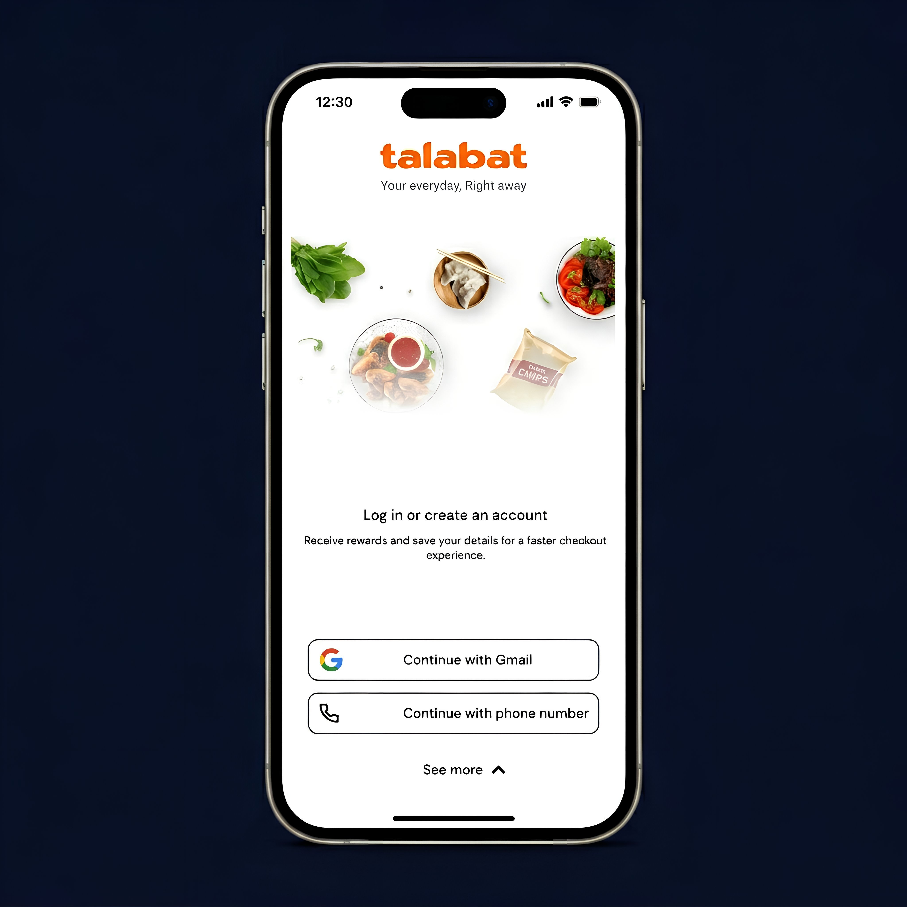

Speculative redesign · Self-initiated · 2024
Talabat.
Talabat.
One-page
checkout.
Talabat's checkout has 4 screens. I redesigned it as one. Self-initiated work, not a real client engagement.
A redesign of the Talabat mobile checkout. The current flow has 4 separate screens: address, then payment, then review, then confirm. I redesigned it as one screen you scroll through. Three personas helped me test it against tough scenarios. Talabat did not ask me to do this. Without a real A/B test, this is a thesis with reasoning behind it, not a proven result.
Four screens.
Four chances to leave.
Splitting checkout across 4 steps looks organized on paper. In practice, every screen change makes users forget what's in the cart. They have to rebuild it in their head each time. By the time they reach the final review, the order feels far away. Doubt sets in.
The math is also bad. If 90% of users finish each screen, after 4 screens you're at 65%, not 90%. Every screen is a chance to lose someone.

BeforeAddress → Payment → Review → Confirm. 4 screens. 4 loads. 4 chances for the user to forget what they were ordering.
ContextMost MENA users order on phones, in small windows of time: a commute, a lunch break, late at night, before iftar. No patience for long forms.
AfterOne scroll. Defaults pre-filled. Total always visible. Edit and Change open as sheets so nothing in the cart resets.
A 4-step checkout solves the database's problem, not the user's.
Five entry points. One terminal screen.
Users start checkout from a lot of different places: homepage, search, the restaurant page, talabat mart, vouchers, past orders. They all end up at the same checkout screen. With 5 different ways in, that final screen has to handle every kind of context.
A stepped flow makes everyone go through the same sub-funnel. A one-page flow lets users scan and decide, no matter how they got there.

Built for Fatima at 5 PM.
I tested the design against three personas: Omar ordering lunch, Rayan ordering at midnight, and Fatima ordering iftar during Ramadan with sunset approaching. Iftar ordering during Ramadan packs a year's worth of stressful checkout situations into 30 days.
If the checkout works for Fatima at 5 PM during Ramadan, fasting, racing the sunset, paying AED 250 for an order across three restaurants, it should work for everyone else the rest of the year.

One scroll. Eight modules.
The new screen has 8 sections, all on one scroll. A reassurance banner at the top. The order summary with an inline Edit. The delivery address with a one-tap Change. The saved payment method, with the card brand visible. Tip options as preset chips. Cost breakdown grouped as one block. The Confirm button in thumb reach. A small secure-checkout note at the foot.

Edit without losing the cart.
Edit and Change open as sheets that slide up over the screen. They don't take you to a new page. So if Fatima taps Edit to check whether she added the no-onion note for her kid, when she closes the sheet she's right where she was.
The cart stays. The tip selection stays. The promo code stays. The address stays. The user never has to start over.

Lock icon.
Not a cart icon.
Most parts of the screen have a reason behind them. The trust pill is at the top because users want to know their data is safe before they read anything else. The ETA goes above the price because for Ramadan orderers, when the food arrives matters more than how much it costs. The tip says "Goes to rider" because without that label, users assume it's a fee added by the platform.
The Confirm button has a lock icon, not a cart icon. The user already knows it's a cart. They've been looking at one for 30 seconds. What they need at the moment of tapping is to feel safe.

Show everything at once.
The usual concern about one-page checkout is that users won't trust something this fast. But trust isn't built by making people slow down. It's built by showing them everything they need at once.
When users see the full cost breakdown, the secure-checkout note, the masked card, and the address with a small map, all on one screen, they trust the order more than they would after clicking through 4 review pages. The breakdown sits in one peach-colored block so it reads as one piece of information, not 4 separate fees.

Decision log
Five calls behind the redesign.
Why one page, not 4 steps?
The math kills 4-step flows. Even with 90% completion per screen, you end up at 65% after 4 screens. The reason 4-step exists is because backends like to validate one stage at a time. Users don't think in stages. They have one job: place the order.
Why a lock icon on the button, not a cart icon?
By the time the user reaches the button, they've been looking at the cart for 30 seconds. They don't need a reminder of what it is. What they need at that moment is to feel safe hitting confirm. A lock answers that. A cart answers a question they're not asking.
Why label the tip "Goes to rider"?
Without the label, users think the tip is a fee added by the platform. With the label, they know the money goes to the person delivering the food. Same field, different feeling. I think the rename probably did more for tip rates than any layout change in this redesign.
Why put the ETA above the price?
For Ramadan iftar orders, the user is racing the sunset. They've been fasting all day. They need food at a specific time. Whether the order costs AED 80 or AED 90 matters less than whether it arrives at 6:34 PM or 7:15 PM. So the ETA goes first.
Why use sheets for Edit, not a separate page?
On most checkouts, tapping back wipes everything: tip selection, promo code, address. So a user like Fatima, who just wants to verify "did I add the no-onion note?", might lose the whole cart trying to check one detail. Sheets keep the cart intact while she edits.
See the collapse yourself.
The full happy path is wired up — Login → Home → Restaurant → Cart → Checkout → Confirmation. Click through to feel the four-screen flow collapse into one. Best on desktop.
Designed around intent, not backend.
Multi-step checkouts are usually designed for what the system needs, not what the user is doing. They map to backend stages: validate the address, validate the payment, submit. But the user is doing one thing: placing an order. Aligning the interface with what the user wants, not what the backend wants, is where the conversion lift is.
4 → 1
4 sequential screens collapsed into one scroll. Every choice and every trust signal in the same place.
3 personas
Tested against Omar at lunch, Rayan at midnight, Fatima at iftar during Ramadan. Iftar is the toughest ordering window of the year.
6 edge cases
Payment failure, item out of stock, zone error, expired promo, network drop, accessibility. The cart survives all of them.